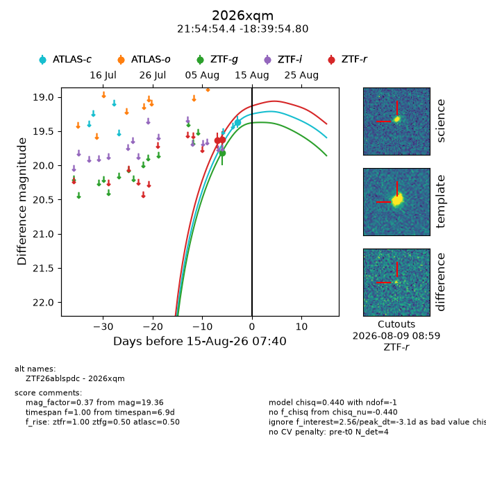
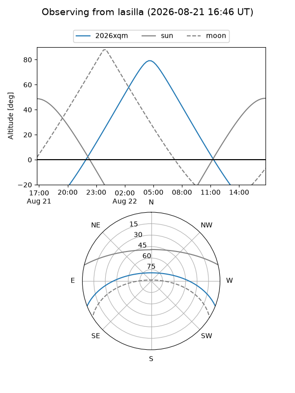
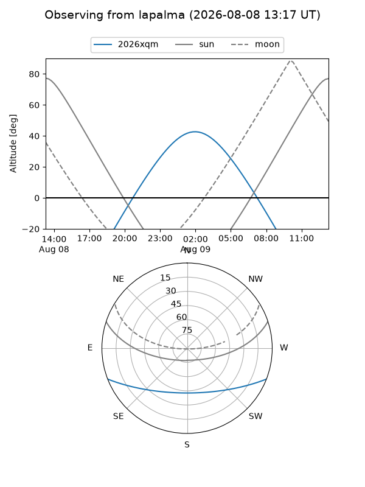
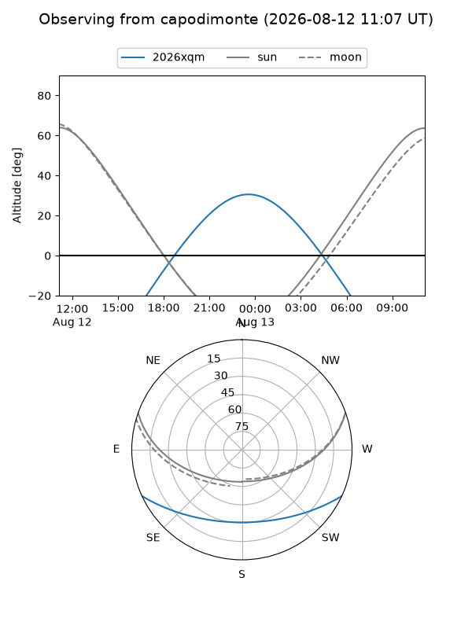
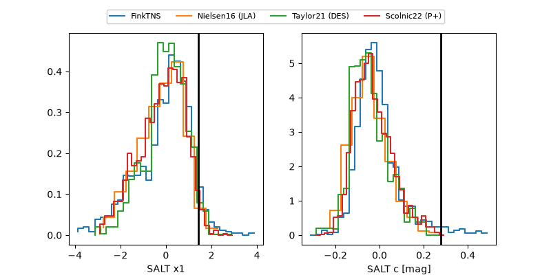

2026xqm
Target 2026xqm at 2026-08-15 07:43
Aliases and brokers:
FINK-ZTF: ztf.fink-portal.org/ZTF26ablspdc
Lasair-ZTF: lasair-ztf.lsst.ac.uk/objects/ZTF26ablspdc
ALeRCE-ZTF: alerce.online/object/ZTF26ablspdc
YSE-PZ: ziggy.ucolick.org/yse/transient_detail/2026xqm
TNS name: wis-tns.org/object/2026xqm
Direct TNS query: direct search
alt names
ZTF26ablspdc (ztf,fink_ztf)
2026xqm (tns,yse)
Coordinates:
equatorial (ra, dec) = 328.7269,-18.66522
equatorial (HMS+DMS) = 21:54:54.45,-18:39:54.80
galactic (l, b) = (35.1221,-48.68635)
Flags:
TNS type: nan
peak dt: -3.1
Photometry:
last atlasc=19.36, ztfg=19.82, ztfr=19.63
1 atlasc, 1 ztfg, 2 ztfr detections
Lightcurve

Visibility



Additional plots
